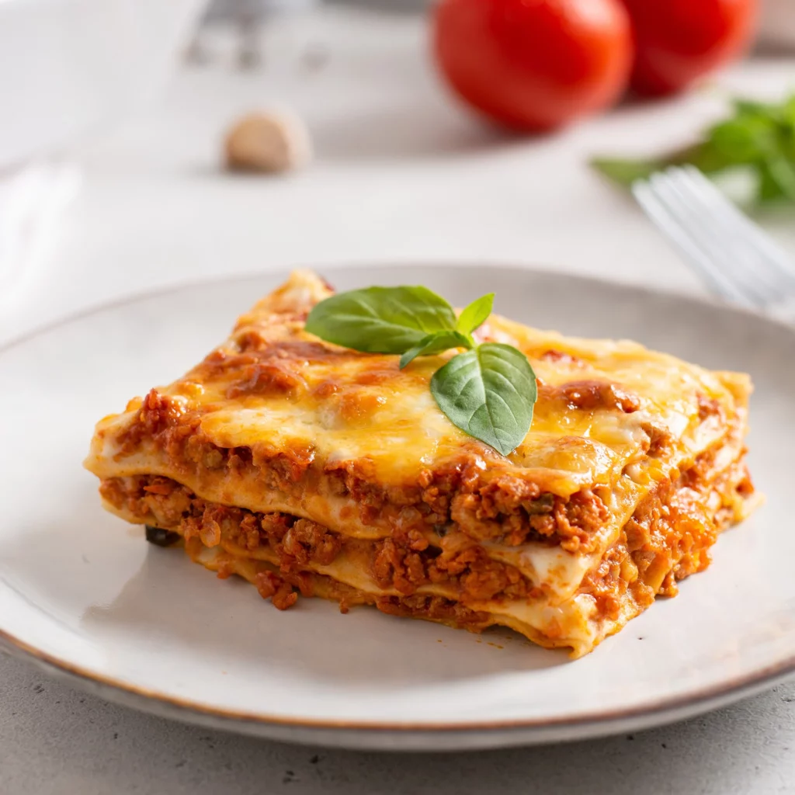

This rich and filling piatto unico (lit. single plate; one-dish meal) is traditionally made from layers of homemade, typically spinach-flavored fresh egg lasagna pasta that is topped with béchamel sauce and a rich meat sauce called ragù alla Bolognese.
Meal prep time : 4 hour
Servings : 6